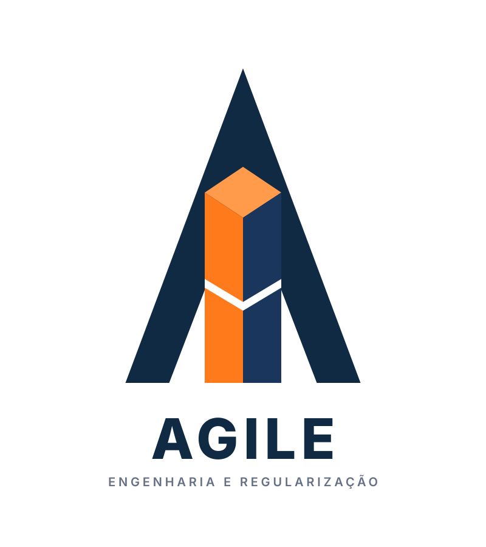
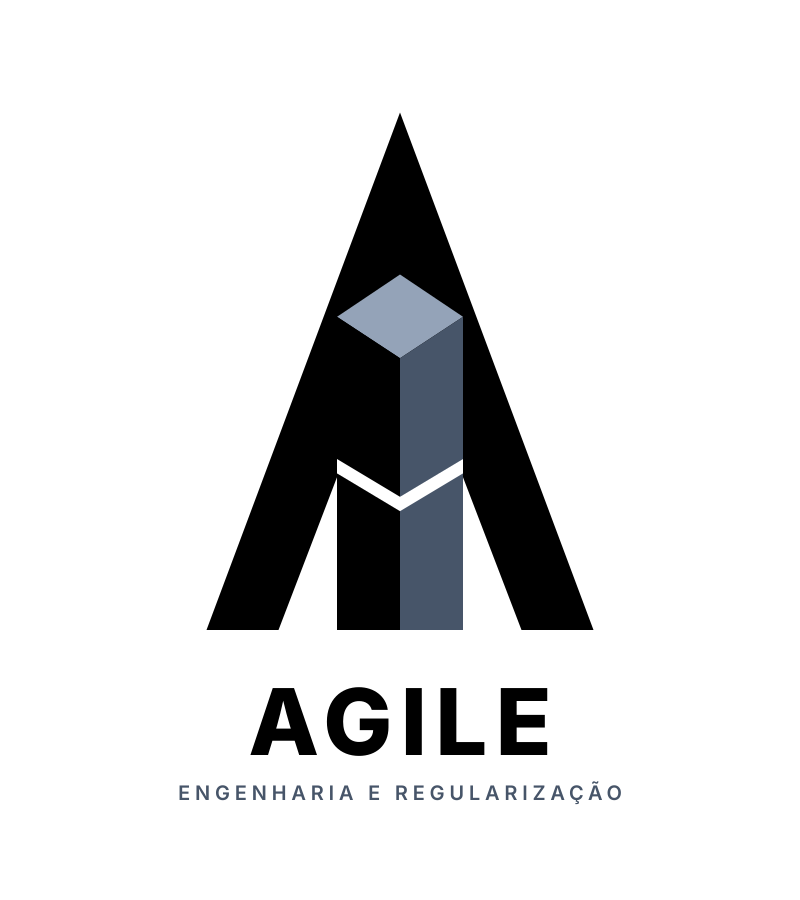
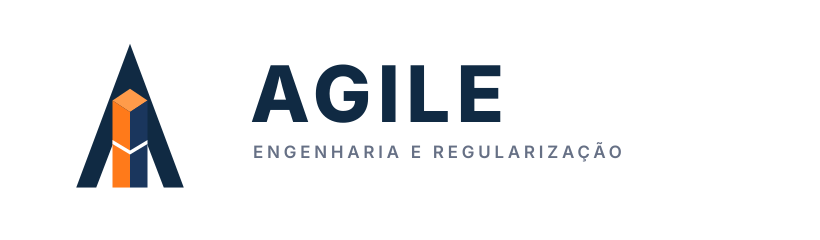
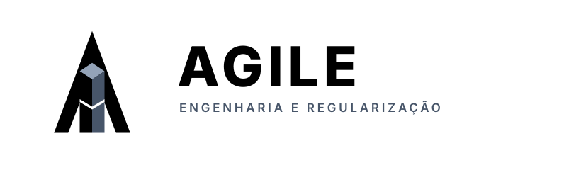
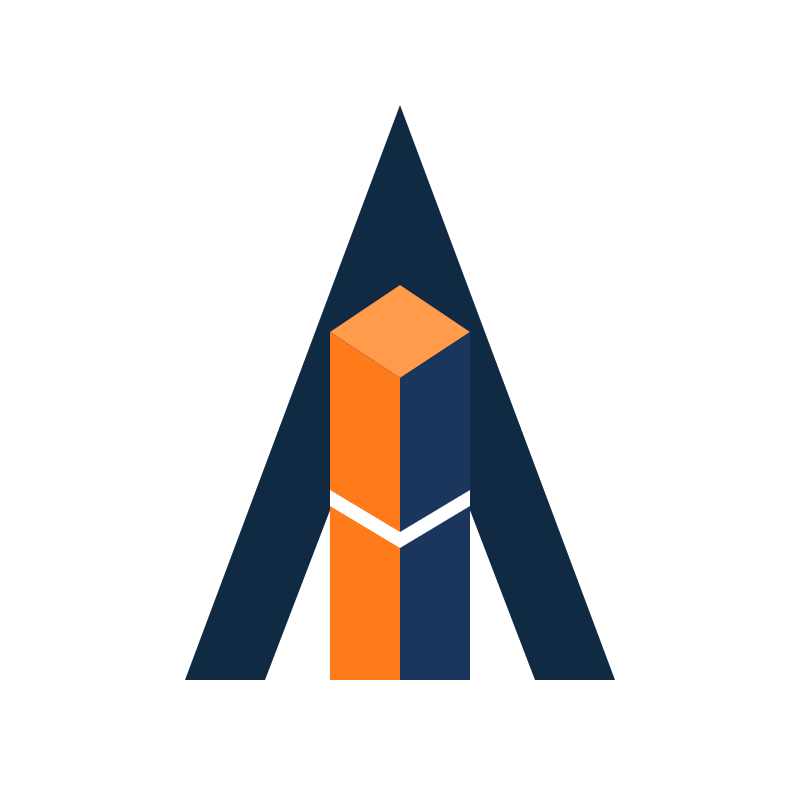
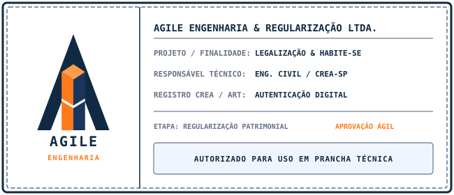

Manual de Identidade Visual
O guia oficial de aplicação da marca Agile Engenharia (Versão 2.0). Uma evolução madura concebida para eliminar ruídos visuais, integrar a fita de evolução contínua, equilibrar as proporções arquitetônicas e elevar a autoridade técnica.



📦 Central de Arquivos Oficiais da Marca
Acesse e baixe todos os formatos vetoriais e bitmaps em alta definição para aplicações digitais, pranchas de projeto e impressões de grande formato.
Agile Brand Kit Completo (.ZIP)
Arquivo mestre consolidado com todas as variantes vetoriais (.SVG), versões monocromáticas minimalistas, versões em alta resolução (.PNG 2K com fundo transparente), favicons institucionais e o carimbo técnico de prancha.


Assinatura Vertical (Fundo Escuro)
Versão contrastante para fundos escuros.



Assinatura Vertical (Monocromático)
Versão minimalista pura em preto e branco.



Assinatura Horizontal (Fundo Claro)
Ideal para cabeçalhos, pranchas e websites.



Assinatura Horizontal (Fundo Escuro)
Composição linear sobre superfícies escuras.



Assinatura Horizontal (Monocromático)
Versão linear minimalista para carimbos e gravuras.



Símbolo Institucional (Isolado)
Ícone isolado para avatares, apps e uniformes.



Carimbo Técnico de Prancha
Selo oficial para memoriais e prefeitura.


Pilares Institucionais
Os quatro fundamentos conceituais que orientam a atuação e o valor da Agile Engenharia.
Agilidade
Processos dinâmicos e sem entraves no trâmite de aprovações, alvarás e regularizações imobiliárias.
Segurança & Confiança
Conformidade jurídica rigorosa, transparência documental e proteção patrimonial definitiva para cada cliente.
Rigor Técnico
Domínio aprofundado do código de obras, legislação urbanística, normas ABNT e regularização fundiária.
Gestão Integral
Acompanhamento completo de ponta a ponta: do levantamento métrico à averbação final em cartório.
Anatomia & Rigor Geométrico
Estrutura milimétrica inspirada na precisão e estabilidade da engenharia civil.
Fundamentos da Geometria
- Monograma Arquitetônico: Estrutura triangular em 'A' com corte angular moderno no ápice, simbolizando elevação e solidez técnica.
- Tipografia Exclusiva: Wordmark desenhado sob medida com o monograma em Open Chevron (Λ), criando identidade única com o símbolo.
- Edificação em Espaço Negativo: Prisma central escalonado em perspectiva isométrica, representando edifícios e regularização urbana.
- Harmonia Cromática: Contraste entre Safety Orange e Amber Rust sobre o Deep Navy, transmitindo dinamismo e autoridade.

Homologado para pranchas técnicas de arquitetura e engenharia, memoriais e processos de aprovação municipal.
Paleta Cromática Institucional
Cores institucionais codificadas para meios digitais e materiais impressos. Clique em qualquer valor para copiar.
Sistema Tipográfico
Famílias tipográficas de alta legibilidade, com desenho geométrico e proporções contemporâneas.
Desenho: Tipografia geométrica proprietária com Open Chevron (Λ) sem traço horizontal.
Conceito: Diálogo direto com o ápice e os ângulos estruturais do símbolo arquitetônico.
Aplicação: Logotipo principal, assinaturas e títulos de grande impacto.
Engenharia Civil & Legalização
Família: Inter / Plus Jakarta Sans
Peso: Regular (400) e SemiBold (600)
Aplicação: Memoriais descritivos, laudos técnicos, propostas comerciais e ambiente digital.
Diretrizes de Aplicação
Boas práticas e restrições fundamentais para preservar a integridade e a autoridade da marca.
Aplicações Corretas
- Utilizar sempre os arquivos vetoriais originais (.SVG) para produções gráficas e digitais.
- Manter a composição institucional AGILE em caixa alta sem acento.
- Preservar a área de respiro e isolamento visual ao redor da marca.
- Aplicar a versão em Deep Navy sobre fundos claros e a versão contrastante sobre fundos escuros.
Usos Incorretos
- Nunca distorcer, achatar ou esticar a proporção original do símbolo e tipografia.
- Nunca aplicar acentuação gráfica na marca comercial (escrever sempre AGILE).
- Nunca alterar a paleta cromática nem aplicar degradês difusos ou sombras 3D não aprovadas.
- Nunca aplicar a versão escura da marca sobre fundos que comprometam o contraste e a leitura.